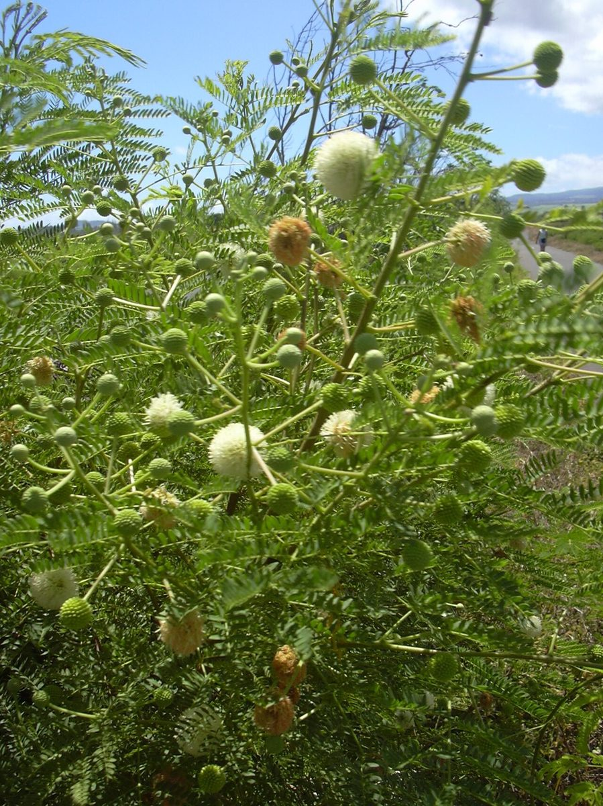
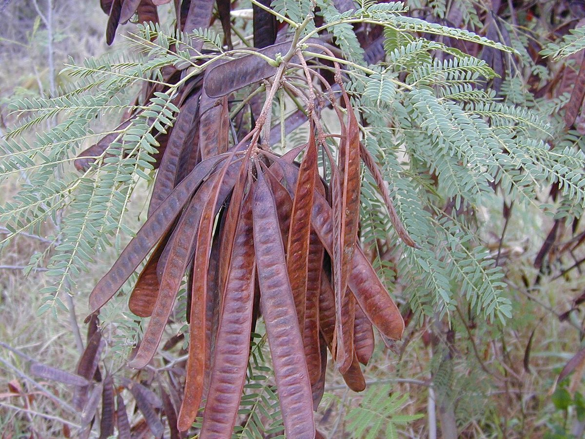

RARE & EXOTIC Beach strand Valley mouth Sea cliff
Leucaena leucocephala
koa haole, ekoa · white leadtree, lead tree, jumbay



Quick facts
| Family | Fabaceae |
|---|---|
| Scientific name | Leucaena leucocephala |
| Hawaiian name(s) | koa haole, ekoa |
| English name(s) | white leadtree, lead tree, jumbay |
| Status | Invasive |
| Conservation | — |
| Coastal zones | Beach strand Valley mouth Sea cliff |
| Occurrence | One of the most abundant woody invasives in Kauaʻi's dry lowlands and coastal fringes. Forms dense multi-stemmed thickets on disturbed ground behind beaches, in the drier valley mouths of the Nā Pali–Kona coastal strand, and on lower sea-cliff slopes. Frequently the dominant woody cover in areas once cleared for agriculture or grazing. |
Hazards: Leaves and seeds contain mimosine, a toxin that causes hair loss and reproductive problems in non-ruminant livestock; this is not a hazard to human hikers passing through, but do not let dogs or horses graze the plant.
How to identify
- Growth form
- Multi-stemmed shrub or small tree, 3–10 m tall, often forming a single-species thicket so dense you cannot walk through it. Crown open and feathery from a distance.
- Size
- 3–10 m; thickets frequently 20+ m across.
- Leaves
- Twice-pinnately compound (bipinnate) — a mimosa-like leaf. Each leaf has 4–9 pairs of side branches (pinnae), and each pinna carries 10–20 pairs of small (~1 cm) narrowly oblong leaflets. Leaves fold partly at night. Overall leaf can be 15–25 cm long.
- Flowers
- Small creamy-white flowers packed into dense spherical heads (~1.5–2 cm across) on stalks from the leaf axils; each head looks like a fuzzy white pom-pom.
- Fruit / seed
- Flat brown papery seed pods 10–20 cm long, 1.5–2 cm wide, hanging in prominent clusters. Each pod holds 15–25 flat, glossy dark-brown seeds. Old pods persist on the tree long after opening.
- Bark / stem
- Grey-brown, shallowly fissured on older stems; young branches green and slender.
- Where it sits on the coast
- Dry to mesic disturbed ground, sea level to about 800 m. On this coast, above the beach strand line and through the drier valley mouths; usually absent from wet interior valleys.
Clinchers (features that lock the ID)
- Bipinnate mimosa-like leaf (feather-of-feathers) — not a single-pinnate leaf like Christmas berry.
- Spherical creamy-white pom-pom flower heads.
- Flat brown 10–20 cm seed pods hanging in dense clusters.
- Dense monotypic thicket habit on disturbed dry ground.
Look-alikes
- Acacia species (koa, formosa koa) — Mature Hawaiian koa (Acacia koa) carries flattened phyllodes (sickle-shaped false leaves), not bipinnate compound leaves; seedlings can show bipinnate leaves briefly but never form the dense monotypic lowland thickets of Leucaena.
- Prosopis pallida (kiawe) — Kiawe has similar bipinnate leaves but is armed with paired spines at the leaf bases, has yellow catkin-like flowers (not white pom-poms), and produces long cylindrical yellow-brown pods, not flat brown ones.
- Schinus terebinthifolia (Christmas berry, this guide) — Christmas berry has singly-pinnate leaves with a winged rachis and red winter berries — very different from Leucaena's bipinnate feather-leaves and flat pods.
Ecology
Native to Central America. Introduced to Hawaiʻi in the 1800s as a fast-growing fodder, fuelwood, and soil-cover species; spread widely from plantings and now the dominant woody invader of dry-lowland disturbed ground. Fixes atmospheric nitrogen, allowing it to enrich and re-shape soils in a way that favors more invasives and disfavors native dry-forest species. [1], [2], [13], [14]
Cultural significance
—